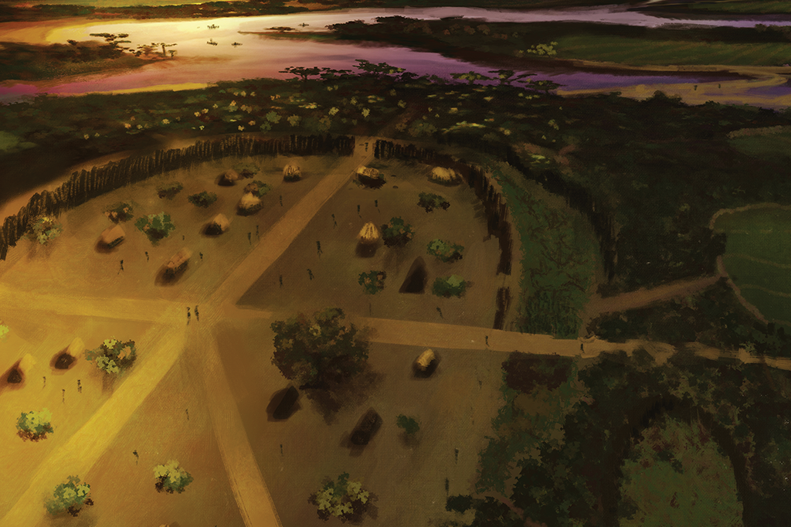

Você é um jovem explorador que encontra uma carta antiga escondida em um livro antigo na biblioteca de sua avó. A carta fala de uma cidade perdida chamada “Aetheria”, que é conhecida por suas riquezas e segredos antigos. A carta contém pistas enigmáticas sobre a localização da cidade e um mapa parcialmente destruído. Você decide seguir as pistas e embarcar em uma jornada para encontrar Aetheria.!
Você é um jovem explorador que encontra uma carta antiga escondida em um livro antigo na biblioteca de sua avó. A carta fala de uma cidade perdida chamada “Aetheria”, que é conhecida por suas riquezas e segredos antigos. A carta contém pistas enigmáticas sobre a localização da cidade e um mapa parcialmente destruído. Você decide seguir as pistas e embarcar em uma jornada para encontrar Aetheria.
Você é um jovem explorador que encontra uma carta antiga escondida em um livro antigo na biblioteca de sua avó. A carta fala de uma cidade perdida chamada “Aetheria”, que é conhecida por suas riquezas e segredos antigos. A carta contém pistas enigmáticas sobre a localização da cidade e um mapa parcialmente destruído. Você decide seguir as pistas e embarcar em uma jornada para encontrar Aetheria!
Tela inicial: Você está na biblioteca de sua avó e encontra a carta antiga.
Escolha: Ler a carta ou guardá-la para mais tarde.
Tela de Decifra: A carta contém um texto enigmático e um mapa parcialmente destruído.
Escolha: Decifrar o texto (leva ao Passo 2A ou 2B) ou pedir ajuda a um especialista.
Tela da Montanha: Você começa sua jornada para a montanha mencionada na carta.
Escolha: Explorar a área (leva ao Passo 3A) ou buscar um caminho alternativo.
Tela da Floresta: Você entra na floresta, seguindo as pistas da carta.
Escolha: Procurar por um artefato antigo (leva ao Passo 3B) ou explorar uma trilha desconhecida.
Tela da Caverna: Você encontra uma caverna misteriosa.
Escolha: Entrar na caverna (leva ao Passo 3C) ou investigar a entrada da caverna.
Tela do Guia: Você encontra um guia local que pode ajudar.
Escolha: Aceitar a ajuda do guia (leva ao Passo 4A) ou continuar sozinho.
Tela da Montanha: Você começa sua jornada para a montanha mencionada na carta.
Escolha: Explorar a área (leva ao Passo 3A) ou buscar um caminho alternativo.
Tela do Artefato: Você descobre um artefato que fornece mais pistas.
Escolha: Usar o artefato para decifrar mais pistas (leva ao Passo 4B) ou investigar mais a fundo.
Tela do Segredo: Você descobre um segredo antigo dentro da caverna.
Escolha: Seguir o segredo (leva ao Passo 4C) ou sair da caverna e buscar mais pistas.
Tela da Cidade Perdida: Você finalmente encontra a cidade perdida de Aetheria.
Final A: Descubra os segredos e riquezas da cidade.
Tela do Enigma: Resolva um enigma para acessar a cidade perdida.
Final B: Resolva o enigma e encontre a cidade.
ela do Segredo: Use o segredo descoberto para localizar a cidade perdida.
Final C: Encontre a cidade e desvende seus mistérios.
Você é um jovem explorador que encontra uma carta antiga escondida em um livro antigo na biblioteca de sua avó
Tela da Caverna: Você encontra uma caverna misteriosa.
Escolha: Entrar na caverna (leva ao Passo 3C) ou investigar a entrada da caverna.

Tela da Cidade Perdida: Você finalmente encontra a cidade perdida de Aetheria.
Dentro da cidade perdida, você descobre tesouros inimagináveis e decide se dedicar a estudar e preservar
este lugar